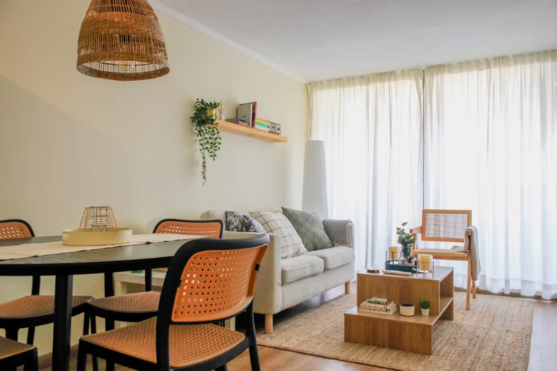

Estudio PérezHome Spa
Historia completa
EstudioPérez Home Spa somos una empresa familiar dedicada al arriendo de propiedades amobladas en Santiago y El Tabo. Ofrecemos estadías temporales con atención personalizada, confanza y cuidado en los detalles, para que cada huésped se sienta como en casa, ya sea por vacaciones, trabajo o estudios.
EstudioPérez HomeBrisa Urbana es la marca de Estudio PérezHome Spa especializada en arriendos amoblados. Nace de la pasión familiar por entregar espacios donde la vida cotidiana y la experiencia de viaje se funden. Con presencia en Ñuñoa y El Tabo, combinamos comodidad, calidez y atención profesional.
Nuestra visión es brindarte una experiencia única, llena de tranquilidad, buena vista y un entorno familiar, donde la desconexión conviva con el respaldo de Estudio PérezHome Spa. Buscamos consolidarnos como la opción preferida frente al mar o en la ciudad.
